1926—The New-Way Course in Fashionable Clothes-Making
Lesson 9—Uses of Bias Binding
The Many Uses of the Bias Binding
Have you ever stopped to consider the many uses of the bias bindings? As a neat finish on undergarments they combine attractiveness with service—for bias bindings, you know, have a way of resisting the wear and tear of many launderings. On children's clothes they offer a most pleasing finishing-touch, and as a trimming they really achieve some remarkable effects.
In this lesson we are going to study all about bias bindings, how to make them and how to apply them to the pretty clothes we are planning to make very soon. Study the lesson carefully—it contains some very valuable information for you.
The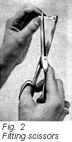 Cutting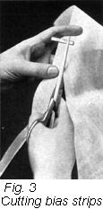 Gauge on Your Sewing Machine
Perhaps you do not know that in your set of attachments that came with your sewing machine there is a little attachment that saves you lots of time and trouble. We refer to the cutting gauge which enables you to make all the bias strips you want right at home. Before anything else, we want you to know just how to use this valuable gauge.
- Remove your cutting gauge from your box of attachments. Do not become alarmed if you do not have a box of attachments—if you lost, mislaid or never received it. Simply write to the sewing machine company, ordering a box and also a booklet so that you can easily identify them.
- You will find the gauge marked to cut different widths of binding. There are three letters on the gauge, F, B and C.
- When set at F the strip cut is wide enough for facings; when set at B it is wide enough for bindings; when set at C the strip is just-right for cording. Read this over again and try to remember it.
- Cut and join Bias pieces exactly as you learned in Lesson 8. "How to Join Bias Facings."
- After these pieces are cut and joined adjust the gauge to your scissors and cut these strips into narrow strips which will just fit the binder. If the gauge is set at letter B the binding will be the correct width.
- Join selvedge edge to selvedge edge, crosswise edge to crosswise edge, and you will have your material ready to use in the binder.
- Join the pieces and press.
Note that the Illustrations below show the right and wrong methods of joining the strips after you have cut them with the aid of your cutting gauge. When you have your bias material all ready, wind it on a card-board to keep it smooth, and you will have several yards of bias binding for use in this lesson.
The Binder
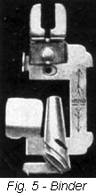Another very valuable attachment in your box of sewing-machine attachments is the binder. Of course fine bindings can be made by hand, but the modern, time-saving method is to make them on the sewing-machine with the aid of the rapid little binder. With this tiny bit of mechanical steel you can make ten yards of binding in ten minutes. Think how long it would take you to do it by hand!
- Remove the presser foot from your sewing machine and attach the binder attachment. Your instruction book will tell you how to attach it.
- The binding you have just made will be found to fit exactly into the measuring gauge found on the binder.
- 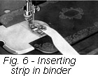 Fold the bias strip in the center lengthwise, and cut it to a point so that you can insert it into the binder easily. Fig. 6.
- The binder has a scroll through which the binding must pass until the point comes through the forward end and under the foot. As the binding passes through the scroll you will notice that the edges of it are turned with almost mathematical precision—more even and precise than you could possibly hope to turn it by hand.
- Now take the material that is to be bound; the edge upon which the binding is to be applied should be held in the scroll of the binder.
- Now proceed to sew, being sure that the stitching always comes close to the edge and that the binding is not stretched.
Perhaps this first lesson on binding seems puzzling to you, as everything new seems puzzling at first glance. But really, it's the simplest thing in the world once you learn how to use your binder correctly. And how useful it becomes when you are ready to make pretty little clothes for the kiddies and neat tailored things for yourself!
So practice binding over and over again until you know it. Practice on cheap muslin with contrasting colors so that you can quickly discern your mistakes—if there are any. We want to help you in every way possible and we do not want you to hesitate for one minute if there is anything you do not quite understand and would like to have more fully described.
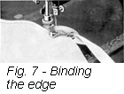Binding Straight or Curved Edges
You will find binding straight edges a very simple matter. Curved edges are a trifle more difficult to bind neatly, and consequently require more practice. But first master straight-edge binding, and you will find that binding curved edges is not so very difficult after all!
- To bind curved edges, be sure that the edge to be bound is well held within the scroll. It has a tendency to slip out; the result, as you can readily see, is an ill-bound edge that is not neat and that will succumb easily to the first bit of rough wear.
- Feed the material into the binder only as fast as the machine feeds. Do not hold back either material or binding, but learn to feed both simultaneously.
- When turning a curved edge, urge the material proper around gently with the fingers of the right hand, being sure that the edge being bound and the binding are in place and doing their work correctly.
- After you have learned how to bind curved edges with your binder you will realize how many uses there are for the simple little binder. It will make quickly and easily, edges for your underwear and trimmings for aprons and children's clothing.
- Another use for the binder is to make plackets for wash dresses and under-garments. It makes these plackets neater and stauncher than you could ever make them by hand. To make it, cut a slot five or six inches long in a piece of cotton material and fold in one straight continuous length. Then insert the edge of the material in the binder and bind until you reach the lower point of the slot. Stitch slowly at this point, turn the material you are binding to the other side of the placket, and continue as before.
- Binding makes a most attractive trimming when used as a French fold. To apply, insert the binding material in the binder and place the garment under the binder itself. Stitch the fold in the position desired.
- Instead of using bias binding, as made according to our directions in this lesson, you can use folded tape, military braid, ribbon, or any binding material of the proper width with your binding attachment. However, do not use any of these prepared bindings for practice work as it is unnecessarily extravagant; the "home made" binding will serve the purpose just as well.
- As soon as you feel that you understand the binder, practice making scallops. We do not expect you to be able to make perfect scallops, or even neat scallops, at first, but if you practice whenever you have a chance, you will soon be turning edges like an expert and binding scallops as though it were the easiest thing in the world.
Read over the directions until you understand them, then practice and practice until you feel sure that you will never have any trouble with edges that have to be bound.
Dress Trimmings
Some very clever and inexpensive dress trimmings can be made in a few minutes with the aid of bias binding.
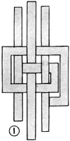The delightful Greek key design, shown in Fig. 1, is made by simply interlacing the folds as shown.
The points as shown in Fig. 2 would make a smart finish for a collar and cuff set or on the edge of an apron.
 Tabs are quite the proper thing for "dressing up" the children's play clothes. Fig. 3.
Tabs are quite the proper thing for "dressing up" the children's play clothes. Fig. 3.
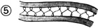For attractive porch dresses or little afternoon frocks, a dainty addition would be a bit of trimming as shown in Fig. 5. Faggoting holds the bias strips together.
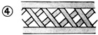A sturdy trimming that will stand a lot of wear is the lattice design shown in Fig. 4.
Even a posy, which may disguise itself as a pocket if you choose, can be made from bias binding. This you will find in Fig. 6.
Bindings Simplify Baby's Clothes
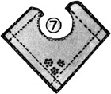How pretty and simple a bib can be is shown in Fig. 7. Bind the bib with your favorite color, holding the binding in place with French knots, placed close together. Rows of outline stitches and tiny flowers complete this bit of finery.
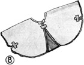What baby wouldn't be comfortable in the little nightingale shown in Fig. 8.
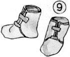The making of bootees becomes a matter of only a few minutes with bias binding. Fig. 9.
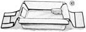A basket with plenty of pockets to hold all of baby's toilet articles is attractive and very simple. Fig. 10.
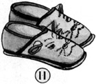It will be no trouble to get young sister, brother, or daughter to bed if they can slip into cute "kitten" slippers, shown in Fig. 11.
Household Articles
Household necessities to keep things in their proper place and in good condition are at once serviceable and attractive when made with bias binding.
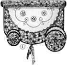To keep doilies smooth and clean, keep them in cases like those shown in Fig. 1.
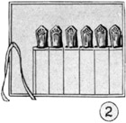Silver keeps its polish better and has fewer scratches if it is kept in flannel cases bound all around. Fig. 2.
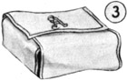To insure nicely folded clean napkins, use a cover such as shown in Fig. 3.
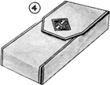Blankets can be kept soft, fluffy, and clean if protected with a simple cover as shown in Fig. 4.
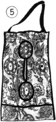How easily the laundry bag can be emptied if it is made with a flap at the bottom as shown in Fig. 5.
Gift Making is Easy with Bias Binding
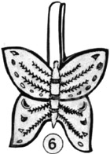A sewing bag in butterfly design will add fascination to your work. Fig. 6.
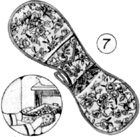No more burnt fingers when removing hot pans from the oven with the protectors shown in Fig. 7.
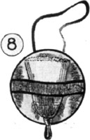If the whisk broom has a place all its own, you will not waste time looking for it. Fig. 8.
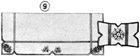A dresser set is always a welcome gift. Especially a dainty one like that shown in Fig. 9.
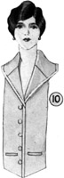A smart vest is shown in Fig. 10. It will brighten up your old suit wonderfully.
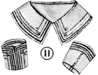Dainty faggoting and hemstitching are used with bias binding in the attractive collar and cuff set shown in Fig. 11.
Lesson 9
Questions
- Of what value is the study of the silhouette to you?
- In what century were bordered materials introduced from which our present day styles come?
- How can you find your correct silhouette?
- What type of silhouette is best for the stout woman?
- What type of dress should be avoided by the high-hipped woman?
- What do the letters F, B and C indicate on the cutting gauge?
- How may bias binding be used as a French fold?
- Name at least three household articles that could well be finished with bias binding.
- What precaution must be taken in binding a curved edge?
Samples of the following should be sent in for inspection in the envelope provided for the purpose. If samples are not correctly done, corrected work will be returned with full explanation. In the case of COMPLETED GARMENTS, the work will be returned to the student for use. Mail your samples with your answers to Quiz Questions and be sure to put name and address and student number on the outside of the envelope. Don't make your samples larger than 5 inches long and 3 inches wide.
Homework Problems
- Make a sample of a bias binding on a straight edge.
- Make a sample of bias binding on a curved edge.
- Select some article you wish in which you use bias binding. Make it and send it in for inspection.